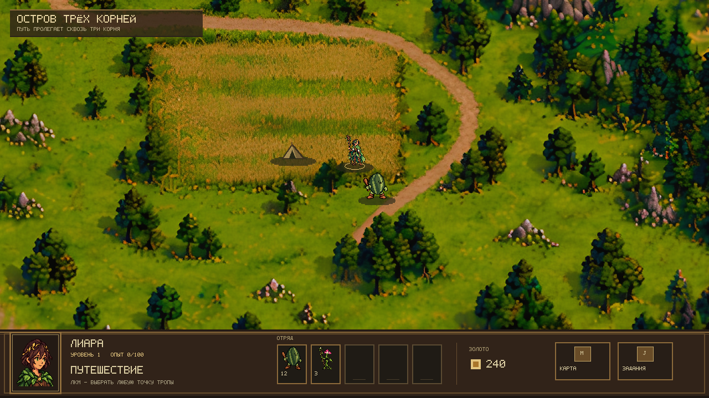

Старая карта остаётся основой. Ниже два новых эффекта без сокращения палитры: усиление локальных контуров и усреднение до одного игрового пикселя с усилением контуров. Обрабатывается только фон; героиня и интерфейс совпадают с исходником.
Слева от белой линии — эффект, справа — исходник. Для оценки мелких пикселей начни с исходного размера 1280 × 720.

Контуры: мягкое усиление локальных границ с ограничением светлых и тёмных ореолов. Мелкий шум почти не усиливается.
Фильтр немного меняет локальный контраст, но не восстанавливает чёткую форму ветвей, камней и травы. Если и эти варианты не подходят, дальнейшее усиление резкости будет добавлять артефакты. Следующий шаг — доработка самих форм и светотени фона в выбранном стиле.
Предыдущие варианты с сокращением палитры · Сравнение с новой картинкой
Это эксперимент. Эффекты включаются отдельным параметром запуска и пока не выбраны по умолчанию.